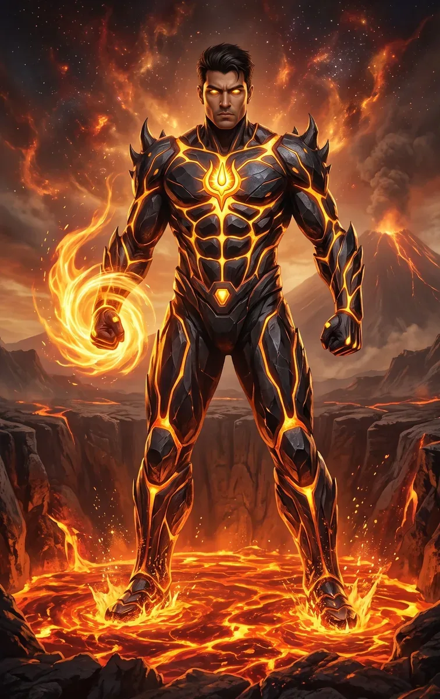
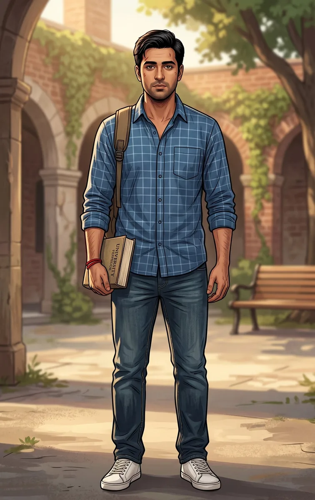

TRINETRA HERO / अग्निवीर
AGNIVEER
THE BLAZING GUARDIAN OF LUCKNOW
Aarav Rathore was an ordinary, chronically late student at Lucknow University until a sudden demonic attack unearthed a fragment of the universe's first flame. Chosen by the Divine Trishul Core, he became Agniveer—the fiery guardian of Lucknow.
01 / IDENTITY
02 / ORIGIN
From Lucknow
to Agni-Lok.
Aarav gained his powers after bonding with an ancient, mystical artifact called the Divine Trishul Core, which was unearthed during a demonic attack on the city. He subsequently received spiritual and tactical training in the astral dimension of Agni-Lok under the guidance of Guru Agni.
His life was irreversibly altered when the molten demon Jwalaasur erupted in the heart of the Hazratganj market. Aarav grabbed the glowing golden metallic shard to protect a civilian. The Core fused with him, encasing him in magma armor and awakening the powers of the cosmos's first flame.
03 / POWERS
Mystical Fire
The ability to generate and manipulate mystical fire.
Fire Made Solid
Mold fire into solid energy shapes, including defensive shields, energy nets and whips.
Ride the Heat
Uses focused thermal energy to propel himself through the air.
Focused Heat
Can focus intense heat through his gaze.
The Invisible Inferno
Can generate extreme, invisible heat from within his body without producing a visible flame, creating massive thermal updrafts and melting solid rock.
04 / ABILITIES
Fast & Agile
Quick reflexes and natural athleticism.
Discipline the Flame
Trained by Agni Monks to use meditation and breathing techniques to control his adrenaline.
Science Meets Myth
Combines basic scientific principles like thermal dynamics and oxygen flow with his mythological powers to outsmart stronger foes.
05 / WEAPONS & EQUIPMENT
The Divine
Trishul Core.
Divine Trishul Core: An ancient, glowing artifact permanently embedded in his chest that acts as the battery for his powers and alerts him to dark magic.
Agni-Astra (Plasma Trishul): His ultimate weapon—a massive, blindingly bright trident made of pure, concentrated golden plasma, surrounded by glowing Sanskrit mantras, which he can summon directly from his chest core.
06 / AARAV — CIVILIAN IDENTITY

THE STUDENT BEHIND THE FLAME
AARAV RATHORE
Aarav is a young Indian man with a wheatish skin tone, slightly messy dark brown hair and brown eyes which flash glowing gold or stark white when his powers activate. He has a lean, athletic build, but often sports dark circles under his eyes due to chronic lack of sleep.
Civilian Costume
Simple, unkempt college wear. He is typically seen wearing a generic Lucknow University hoodie and torn jeans, or a loose checkered overshirt with a plain white T-shirt, always lugging around a heavy college backpack.
07 / AGNIVEER ARMOR
Fire forged
into armor.
Sleek, high-tech magical armor that forms over his body. It is textured like hardened, dark obsidian or magma-rock, laced with bright, glowing saffron and orange veins.
He wears a stylized flame-shaped visor that covers his upper face to protect his identity. The armor features ancient glowing Sanskrit runes on the shoulders, and the golden "Agni" symbol—a stylized flame crossed with a Trishul—glows prominently from the core on his chest.
08 / STORY, WEAKNESSES & PERSONALITY
Fire follows emotion.
His powers are directly tied to his emotions; intense anger causes his flames to become jagged, uncontrollable and highly destructive to his surroundings.
Air matters.
His external fire generation relies heavily on atmospheric oxygen. In a vacuum or toxic, oxygen-deprived smog, his flames can sputter and die.
The cost of power.
The immense physical toll of his powers leaves him constantly exhausted in his civilian life.
Brave, impulsive, human.
Aarav is kind-hearted, fiercely protective of his city and inherently brave, willing to throw himself in harm's way for complete strangers. However, he is impulsive, struggles with a short temper and is deeply stressed. He carries the heavy burden of imposter syndrome while balancing guardian duties with college, friendships and exams.
08 / STORY, WEAKNESSES & PERSONALITY
The story of
Agniveer.
SHORT BIO
Aarav Rathore was an ordinary, chronically late student at Lucknow University until a sudden demonic attack unearthed a fragment of the universe's first flame. Chosen by this ancient artifact, Aarav transformed into Agniveer. Now, armed with a plasma trident and a fiery temper he must learn to control, he stands as the blazing guardian of Lucknow, battling creatures of the dark while desperately trying not to fail his college classes.
DETAILED BIO
Aarav Rathore lived a chaotic but completely normal life in the historic city of Lucknow. As a 20-year-old college student, his biggest daily battles were avoiding the wrath of his strict professors and keeping up with the wild theories of his aspiring-journalist friend, Neha.
His life was irreversibly altered one morning when a towering molten demon named Jwalaasur erupted in the heart of the Hazratganj market. Amidst the chaos and crumbling asphalt, Aarav spotted a glowing, golden metallic shard in the crater—the Divine Trishul Core. Hearing its ancient call, Aarav grabbed the artifact to protect a civilian. The core fused with him, encasing him in magma armor and awakening the powers of the cosmos's first flame.
Initially overwhelmed and nearly burning down his own city in a fit of rage, Aarav was pulled into the astral dimension of Agni-Lok by the ancient Guru Agni. There, he learned that fire is not just a tool of destruction, but a source of life and energy that requires absolute emotional discipline.
Returning to Earth, Aarav defeated Jwalaasur, but his victory caught the attention of the Shadow King, Kaakaal, a dark entity observing from the underworld. Now, Aarav must navigate his dual life. By day, he is an exhausted student trying to keep his secret hidden from his closest friends; by night, he is Agniveer, using his mastery over fire and his sharp intellect to protect the city of Nawabs from an escalating army of mythical nightmares.
09 / COMICS
Published stories.
Maximum 3 latest issues